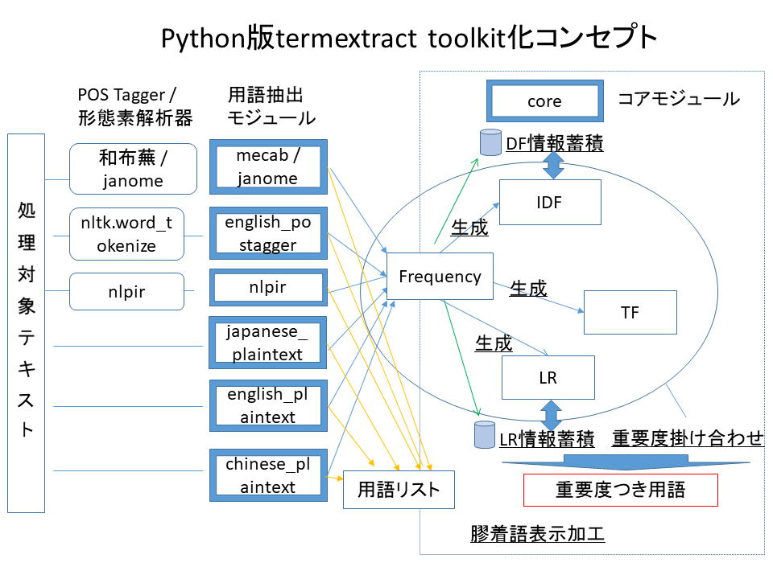

２．インストール
pytermextractを解凍し以下のコマンドを実行します。
pip install .
高精度の用語抽出を行うためには、日本語形態素解析器やPOS Taggerも合わせてインストールします。
- 和文
janomeをインストールします。インストールは以下のコマンドで可能です。
pip install janome
- 英文
nltk(Natural Language Toolkit)が必要です。AnacondaでPythonをインストールするとnltkが最初から含まれています。
nltkのインストール法は以下のコマンドで可能です。
pip install nltk
Pythonの対話モードで以下の作業が追加で必要になることがあります。
import nltk
nltk.download('punkt')
nltk.download('averaged_perceptron_tagger')
- 中文
nlpir (ICTCLASS)をインストールします。インストールは以下のコマンドで可能です。
pip install pynlpir
pynlpir update
※ pythonのunittestによりインストール成否を確認できます。
以下のとおり実行ください。ご利用にならない機能は失敗でも大丈夫です。
cd tests
pythom -m unittest
３．サンプルスクリプトを使用する
（サンプルスクリプトは pytermx フォルダにあります。）
３－１．形態素解析・POS Taggerと組み合わせた用語抽出
- janome（日本語形態素解析器）の和文解析結果をもとに、専門用語を抽出する
termex_janome.py
-
usage:
python termex_janome.py japanese_text.txt
・引数に入力とする日本語テキストファイル(utf8)を指定
・処理結果ファイル: janome_extracted.txt
- 和布蕪（日本語形態素解析器）の和文解析結果をもとに、専門用語を抽出する
termex_mecab.py
-
usage:
python termex_mecab.py mecab_tagged.txt
・和布蕪(IPDIC)解析済みのテキストを入力にする
・入力の文字コードはutf8とする
・処理結果ファイル: mecab_extrcted.txt
- 英文POS Tagger(Pythonのnltkモジュールのword_tokenize）の英文解析結果をもとに、専門用語を抽出する
termex_eng.py
-
usage:
python termex_nlpir.py chinese_text.txt
・引数に入力とする中文テキストファイル(utf8)を指定
・処理結果ファイル: nlpir_extracted.txt
３－２．文字列分割による用語抽出
- 英文を指定のストップワードで分割することで、専門用語を抽出する
termex_eng_plain.py
-
usage:
python termex_eng_plain.py english_text.txt
・引数に入力とする英文テキストファイル(utf8)を指定
・処理結果ファイル: eng_plain_extracted.txt
- 和文を「ひらがな」及び「記号」で分割することで、専門用語を抽出する
termex_japanese_plain.py
-
usage:
python termex_jpn_plain.py chinese_text.txt
・引数に入力とする日本語テキストファイル(utf8)を指定
・処理結果ファイル: jpn_plain_extracted.txt
- 中文を指定のストップワードで分割することで、専門用語を抽出する
termex_chi_plain.py
-
usage:
python termex_chi_plain.py chinese_text.txt
・引数に入力とする中文テキストファイル(utf8)を指定
・処理結果ファイル: nlpir_extracted.txt
３－３．重要度計算のバリエーション
- TF・IDFを重要度とした専門用語を抽出する例（janomeの和文解析を使用）
-
- ファイル群からDF情報を生成
termex_janome_tfidf1.py
-
usage:
python termex_janome_tfidf1.py 01.txt 02.txt ...
・引数に入力とする日本語テキストファイル(utf8)を指定
・入力に指定したすべてのテキストファイルからDFを集計
・集計結果はdbm "df"に蓄積
- DF情報をもとに個々のファイルを重要度計算
termex_janome_tfidf2.py
-
usage:
python termex_janome_tfidf2.py 01.txt
・引数に入力とする日本語テキストファイル(utf8)を指定
・集計済みIDFをもとに、引数で与えたテキストファイルの用語重要度を出力
・処理結果ファイル: janome_extracted-tfidf.txt
- DF情報をクリア
clear_df.py
-
usage:
python clear_df.py
- LR(単名詞の左右の連接情報)を蓄積し、それをLFの値として用いる例（janomeの和文解析を使用）
-
- LR情報を蓄積
termex_janome-store_lr1.py
-
usage:
python termex_janome_store_lr1.py 01.txt 02.txt ...
・引数に入力とする日本語テキストファイル(utf8)を指定
・入力に指定したすべてのテキストファイルから学習
・集計結果はdbm "tstore-lr"に蓄積
- 蓄積したLR情報をもとにファイルを重要度計算
termex_janome_store_lr2.py
-
usage:
python termex_janome_store_lr.py 01.txt
・引数に入力とする日本語テキストファイル(utf8)を指定
・事前学習結果をもとに、引数で与えたテキストファイルの用語重要度を出力
・処理結果ファイル: janome_extracted-store_lr.txt
- LR情報をクリア
clear_store_lr.py
-
usage:
python clear_store_lr.py
- パープレキシティによる需要度を用いる例（janomeの和文解析を使用）
termex_janome_pp.py
-
usage:
python termex_janome_pp.py japanese_text.txt
・引数に入力とする日本語テキストファイル(utf8)を指定
・処理結果ファイル: janome_extracted_pp.txt
４．高度な利用
専門用語の抽出とその重要度の計算、膠着言語（和文・中文）の整形出力処理を、複数のモジュール・関数の組み合わせで実現できます。構成は以下の図を参照ください。

※ score_pp (パープレキシティによる重要度計算）のみ、他の重要度と掛け合わせることはできなくなっています。
５．提供機能の利用例
５－１．POS Tagger・形態素解析器の出力結果を使った専門用語抽出
５－２．文のストップワード分割による専門用語抽出
５－３．専門用語の重要度計算の応用
６．仕様
入出力に使用できる文字コードはUTF-8のみです。
- termextract.core - termextractの基本関数を提供
-
インターフェイスは以下のとおり。
- modify_agglutinative_lang(data)
-
半角スペースで区切られた単名詞を膠着言語（日本語等）向けに成形する
- data 【必須】
-
複合語（単名詞の空白区切り）をキーに重要度を値にしたディクショナリ
- score_lr(frequency, ignore_words, lr_mode, average_rate, dbm)
-
専門用語とそれを構成する単名詞の情報から重要度を計算する
- frequency 【必須】
-
複合語（単名詞の空白区切り）をキーに出現回数を値にしたディクショナリ
- ignore_words 【推奨】
-
- 重要度計算の例外とする語のセット。
- 各言語抽出モジュールに設定しているIGNORE_WORDSの指定を推奨する。
- lr_mode
-
- 1のときはLRの計算において「延べ数」をとる。
- 2のときはLRの計算において「異なり数」をとる。
- デフォルトは「延べ数」をとる。
- average_rate
-
- 重要度計算においてLRとFrequencyの比重を調整する。
- 数値が小さいほうがFRの比重が大きい。
- デフォルトは1。
- dbm
-
- LR情報を蓄積するdbmファイルを指定する。dbmファイルは、あらかじめ読み込み可能にしオープンしておく。
- 指定のない場合は、dbmの蓄積情報をLRの計算に使わない。
- store_lr()も参照のこと。
- score_pp(frequency, ignore_words, average_rate)
-
専門用語とそれを構成する単名詞の情報からパープレキシティによる重要度を計算する。
この重要度は専門用語の出現頻度情報も加味して算出するため、Frequencyと組み合わせず、
単独で使用すること。
- frequency 【必須】
-
複合語（単名詞の空白区切り）をキーに出現回数を値にしたディクショナリ
- ignore_words 【推奨】
-
- 重要度計算の例外とする語のセット。
- 各言語抽出モジュールに設定しているIGNORE_WORDSの指定を推奨する。
- average_rate
-
- 重要度計算においてLRとFrequencyの比重を調整する。
- 数値が小さいほうがFRの比重が大きい。
- デフォルトは1。
- frequency2tf(frequency)
-
Frequencyの情報から複合語（単名詞の空白区切り）をキーにTF(Term Frequency)を値にしたディクショナリを生成する。
- frequency 【必須】
-
複合語（単名詞の空白区切り）をキーに出現回数を値にしたディクショナリ
- store_df(frequency, dbm)
-
Frequencyの情報から複合語（単名詞の空白区切り）をキーにDF(Document Frequency)の情報をdbmに蓄積する。
一回の関数呼び出しを一回の文書読み込みとみなす。
- frequency 【必須】
-
複合語（単名詞の空白区切り）をキーに出現回数を値にしたディクショナリ
- dbm 【必須】
-
DF情報を蓄積するdbmファイルを指定する。dbmファイルは、あらかじめ書き込み可能にしオープンしておく。
例
import dbm
db = dbm.open("terextract", "c")
termextract.core.store_df(frequency, dbm=db)
- get_idf(words, dbm)
-
複合語（単名詞の空白区切り）のIDF(Inverted Document Frequency)を取り出す。戻り値は複合語（単名詞の空白区切り）をキーに、IDF情報を値にしたディクショナリ
- words 【必須】
-
複合語（単名詞の空白区切り）をキーにしたディクショナリ、もしくはセット。ディクショナリの値は無視される。
- dbm 【必須】
-
DF情報を蓄積するdbmファイルを指定する。dbmファイルは、あらかじめ読み込み込み可能にしオープンしておく。
- store_lr(frequency, dbm)
-
Frequencyの情報から複合語（単名詞の空白区切り）を元にLR(単名詞の左右の連接情報）をdbmに蓄積する。
- frequency 【必須】
-
複合語（単名詞の空白区切り）をキーに出現回数を値にしたディクショナリ
- dbm 【必須】
-
DF情報を蓄積するdbmファイルを指定する。dbmファイルは、あらかじめ書き込み可能にしオープンしておく。
- term_importance(dict_1, dict_2, ..., dict_n)
-
複数の重要度情報を組み合わせ（乗算し）、複合語（単名詞の空白区切り）をキーに重要度を値にしたディクショナリを返す。
- dict_1～dict_n 【必須】
-
複合語（単名詞の空白区切り）をキーに重要度を値にしたディクショナリ。
- termextract.mecab - 「和布蕪」ベースの専門用語抽出
-
和文の形態素解析ソフトである和布蕪の形態素解析結果を受け取り、複合語（空白区切りの単名詞）のリストか、ディクショナリ（複合語をキー、複合語の出現回数を値）を返す。
インターフェイスは以下のとおり。
- cmp_noun_list(data)
-
複合語（単名詞の空白区切り・出現順）をリストで返す。
- cmp_noun_dict(data)
-
複合語（単名詞の空白区切り）をキーに、その出現回数を値にしたディクショナリを返す。
- IGNORE_WORDS
-
重要度計算外にする推奨の単名詞のセットを返す
termextract.janome - janomeベースの専門用語抽出
- 日本語形態素解析器であるjanomeの結果を受け取り、複合語（空白区切りの単名詞）のリストか、ディクショナリ（複合語をキー、複合語の出現回数を値）を返す。
- インターフェイスはtermextract.mecabと同じ。
termextract.english_posagger - nltk.pos_tabベースの専門用語抽出
- 英文POS Taggerであるnltkのpos_tagの結果を受け取り、複合語（空白区切りの単名詞）のリストか、ディクショナリ（複合語をキー、複合語の出現回数を値）を返す。
- インターフェイスはtermextract.mecabと同じ。
termextract.nlpir - NLPIRベースの専門用語抽出
- 中文の形態素解析ソフトであるnlpir(ICTCLAS)の結果を受け取り、複合語（空白区切りの単名詞）のリストか、ディクショナリ（複合語をキー、複合語の出現回数を値）を返す。
- インターフェイスtermextract.mecabと同じ。
termextract.english_plaintext - 英文ストップワード方式の専門用語抽出
- 英文のプレインテキストを受けとり、複合語（空白区切りの単名詞）のリストか、ディクショナリ（複合語をキー、複合語の出現回数を値）を返す。
- インターフェイスはtermextract.mecabと同じ。
- 複合語の切り出しはモジュール内指定のストップワードによる文の分割。
termextract.japanese_plaintext - 和文ストップワード方式の専門用語抽出
- 和文のプレインテキストを受けとり、複合語（空白区切りの単名詞）のリストか、ディクショナリ（複合語をキー、複合語の出現回数を値）を返す。
- インターフェイスはtermextract.mecabと同じ
- 複合語の切り出しは「ひらがな」「記号」による文の分割。
termextract.chinese_plaintex - 中文ストップワード方式の専門用語抽出
- 中文のプレインテキストを受けとり、複合語（空白区切りの単名詞）のリストか、ディクショナリ（複合語をキー、複合語の出現回数を値）を返す。
- インターフェイスはtermextract.mecabと同じ。
- 複合語の切り出しはモジュール内指定のストップワードによる文の分割。
７．オリジナルTermExtractとの違い
（１）言語
オリジナルのTermExtractはPerl ver 5のモジュールとして提供されています。
このpytermextractはPython3のパッケージとして再構築しました。
（２）文字コード
Python3の標準文字コードに合わせ、入出力をUTF-8に限定しています。
（３）オブジェクト指向から関数の提供へ
応用可能性を広げるため、関数を組み合わせて利用できるようにしました。
（４）Pyhonの形態素解析・POS Taggerとの連携
１）日本語形態素解析器 janome との連携
２）nltkの英文POS Taggerとの連携
３）ICTCLASSのPythonパッケージnipirとの連携
（５）和文ストップワード方式
「カタカナ・漢字抽出方式」ではなく、「ひらがな・記号」によるストップワード方式にしました。これはUTF-8化により切り出すべき対象漢字の増加に対応したものです。
（６）機能の実装
機能及びインターフェイスは、予告なく変更される可能性があります。
（７）パラメータの調整
重要度計算対象外にする語の変更など、パラメータの調整を行いました。
８．β版との違い
（１）janome(Pure Pythonの日本語形態素解析器)をサポート
Pure Pythonの日本語形態素解析器であるjanomeをサポートしました。和布蕪よりも簡単にPython上で利用できるのがメリットです。サンプルコードや利用法説明でも和布蕪に換えjanomeを使うように直しています。
（２）重要度計算にパープレキシティを追加しました
sotore_pp関数により、FLR重要度計算をパープレキシティで行えます。Frequencyがあらかじめ組み合わせた上で重要度を計算するため、処理結果のFrequencyやTFとの組み合わせは不要です。
（３）サンプルスクリプトをそのまま実利用にも使えるように修正しました
パッケージ中の"pytermex"フォルダにあります。コマンド引数として入力ファイルを自由に指定できます。出力ファイルは固定となりますので、確認の上ご利用ください。
（４）バグ・コーディングスタイルの修正
β版にあるバグのいくつかを修正しました。
９．Copyright
「専門用語自動抽出システム」は 東京大学情報基盤センター図書館電子化部門中川裕志教授および 横浜国立大学環境情報研究院森辰則助教授が共同で開発したものです。
pytermextractは主として中川教授、 東京大学前田朗、 東京大学小島浩之講師の３者で検討を重ね、この「専門用語自動抽出システム」を改良したものである。
Python版termextractの配布パッケージに含む以下のサンプルデータはWikipedia(CC-BY-Sa)記事を元にしている。
１０．免責
本プログラムの使用において生じたいかなる結果に関しても当方では
一切責任を負わない。